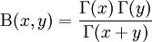

There are two widely used utility functions, the Gamma and Beta functions, which are used in statistics to calculate distribution values. These functions always return a double value and use two double values for input. The beta function was studied by Euler and Legendre and was named by Jacques Binet. In mathematics, the beta function (occasionally written as Beta function) which, is also called the Euler integral of the first kind, is a special function defined by:

where G(x) is the gamma function.
Using the Formula
The Beta method of the UtilityFunctions class calculates the beta function for given two values.
|
Method Name |
Parameters |
Return Value |
|
Beta |
1. a: The first value. 2. b: The second value. |
A double that represents the beta function value. |
Example
Here is a code snippet that shows a sample usage.
|
[C#]
using Syncfusion.Windows.Forms.Chart.Statistics; double result = UtilityFunctions.Beta(a,b); |
|
[VB.NET]
Imports Syncfusion.Windows.Forms.Chart.Statistics Dim double as result = UtilityFunctions.Beta(a,b); |